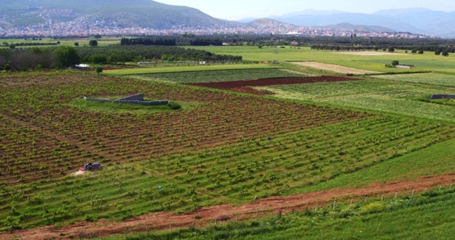
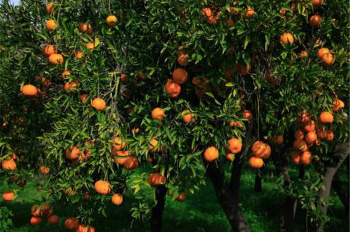
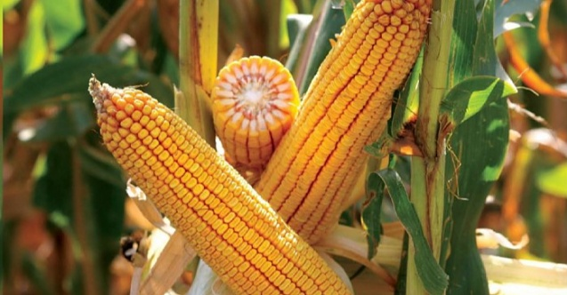

Muğla tarım ürünleri neler?
Muğla ili dağlık bir arâzi olduğu için ekime müsâit arâzisi azdır. Buna rağmen ülkenin önemli tarım üretim merkezlerinden biridir. Tarımda; gübreleme, sulama, ilâçlama ve modern tarım araçları kullanılmaktadır. Tahıl, turunçgiller ve sanâyi ürünleri (pamuk, tütün) başta gelir. Başlıca tarım ürünleri buğday, arpa, mısır, bakla, pamuk, tütün, susam ve anasondur.
Sebzecilik gittikçe gelişmekte, seracılık ve turfanda sebzecilik yaygınlaşmaktadır. Türkiye’de kuşkonmazın tamâmı Muğla’da yetişir. Ayrıca yetiştirilen lahana, pırasa, ıspanak, patlıcan, hıyar, domates, fasulye, biber, soğan, bakla ve karnıbahar başta İzmir ve İstanbul olmak üzere diğer illere sevk edilir.


